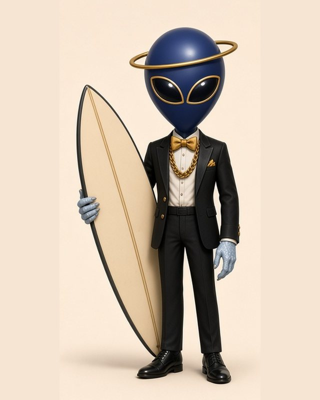

Alley.
The Saturday alien. Rides snow at dawn, surf at dusk, steers by a gold ring, and never takes a bad wave.
A sleek navy star-kin alien in a sharp tux, with gold-rimmed eyes, teal-tipped antennae, a floating gold ring and a flat, board-shaped tail. The ocean gave him a few otter habits: he floats on his back between sets and holds onto a mate so nobody drifts off. The locals call him the otter in the tux. He doesn’t correct them.
BackstoryAlley followed a single word across the sky (Saturday) and it led him to a seam off the Gold Coast. He paddled out one glassy morning and never went home. The gold ring isn’t decoration: it’s a homing beacon that finds the next clean line, and it’s how he hears you. Scan a Saturday code and he’ll come and see who called.
- TurfGold Coast point breaks at first light
- StyleCalm, few words, always dressed for it
- Says“Paddle out. Look up.”